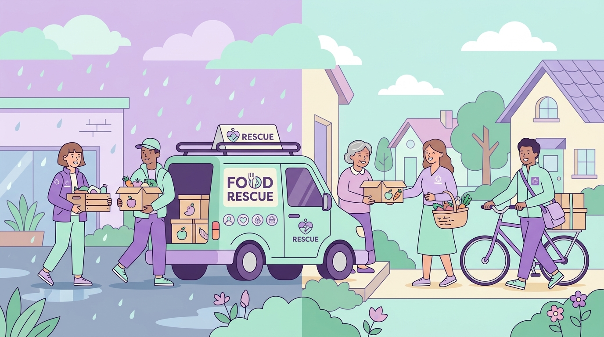

Rescue Food.
Beat The Rain.
Nourish Lives.
RainRoute connects restaurants, banquets, and kitchens having existing surplus food with nearby shelters and volunteers through weather-adaptive smart rerouting.

Tailored Interfaces For Every Stakeholder
Direct access with role permissions, OTP simulation, and verification workflows.
1. Donor Portal
Restaurants, caterers, and banquets list existing surplus meals with countdown timers and generate secure pickup codes.
2. NGO Shelter Portal
Shelters and community kitchens browse nearby available surplus, claim donations, issue QR vouchers, and confirm beneficiary meals.
3. Volunteer Portal
Certified couriers accept dispatch tasks, verify donor handoff with security codes, and deliver meals safely.
4. Admin Console
Moderation desk for reviewing KYC licenses, moderating listings, managing holding hubs, and inspecting activity audit logs.
Weather-Adaptive Food Rescue
Extreme weather and sudden downpours are the #1 cause of surplus food spoilage during delivery delays. RainRoute's predictive engine computes transparent 0–100 risk scores and dynamically triggers safe alternative contingencies:
-
Nearest Safe Holding Hubs: Auto-routes surplus to temperature-controlled community fridges within 1.5 km before rain intensifies.
-
Direct NGO 4-Wheeler Dispatch: Switches from two-wheeler couriers to rain-protected vans during waterlogging.
-
Instant QR Vouchers: Enables immediate walking-distance pickup by local beneficiaries during severe flooding.
Live Climate Disruption Engine
Simulated ModeWhy Surplus Food Rescue Matters
Connecting already-cooked excess food to hungry people before safe deadlines expire.
Reduce Landfill Waste
Food decomposition in landfills generates potent methane gas. Rescuing surplus food directly combats climate change.
Zero Hunger & Nutrition
Nutritious, freshly prepared banquet and restaurant meals reach shelter homes, orphans, and daily wage earners safely.
Zero-Waste Logistics
Not an ordering app. Every feature ensures existing surplus is consumed safely before safe-use deadlines.
How RainRoute Rescues Surplus Food
A complete safe chain of custody from commercial kitchen to beneficiary plate.
Surplus Listed
A verified restaurant or banquet posts existing surplus food with portion counts, diet type, and safe-use deadline.
Smart Rerouting
The weather-adaptive engine assesses local rainfall, waterlogging, and transit availability to select the safest corridor.
Claim & Handoff
An NGO claims the surplus. A volunteer or direct van picks up the food using a secure one-time verification code.
Impact Updated
NGO confirms safe distribution to beneficiaries. Rescued meals, waste prevented, and carbon offsets update live.